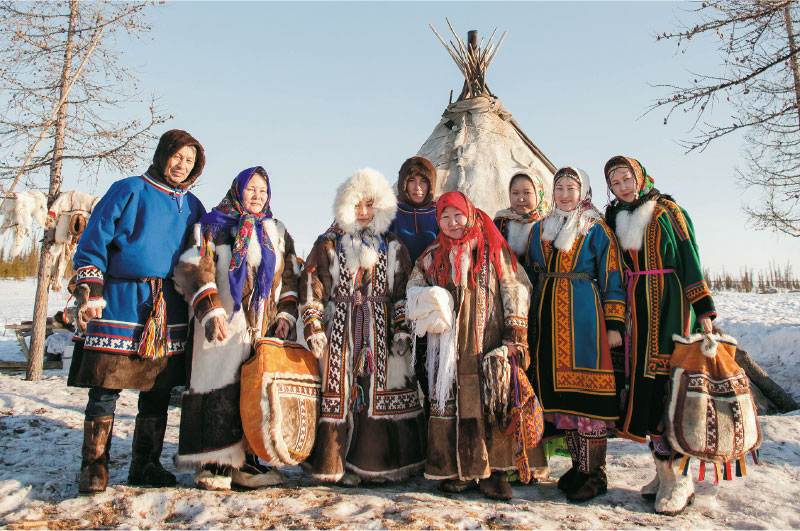
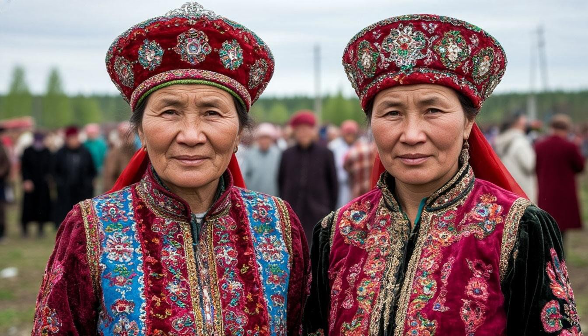
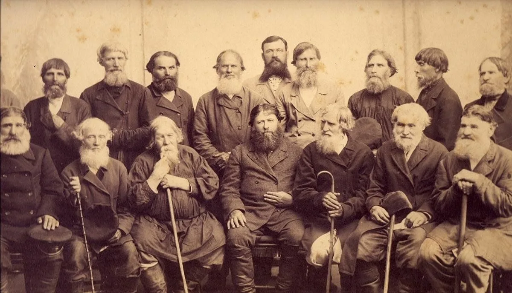
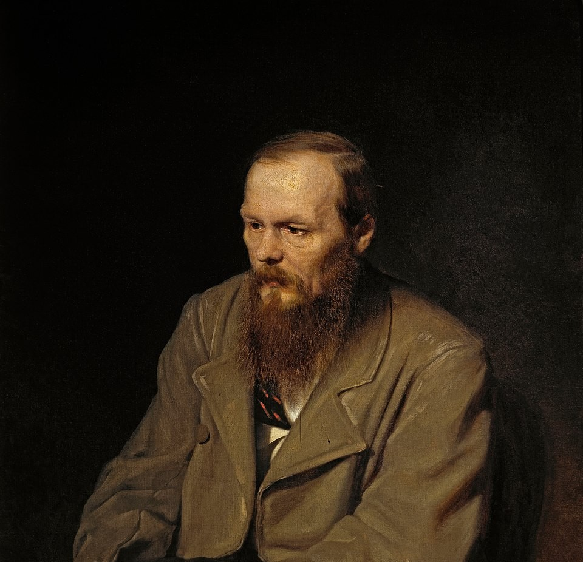
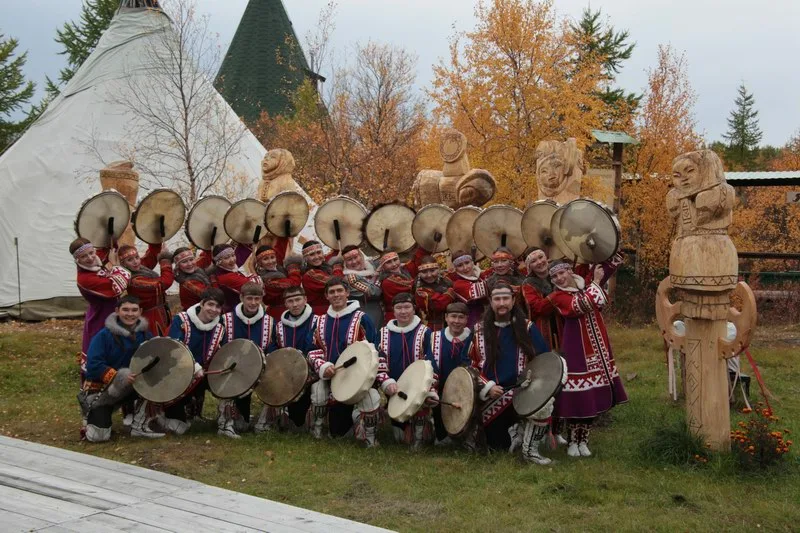
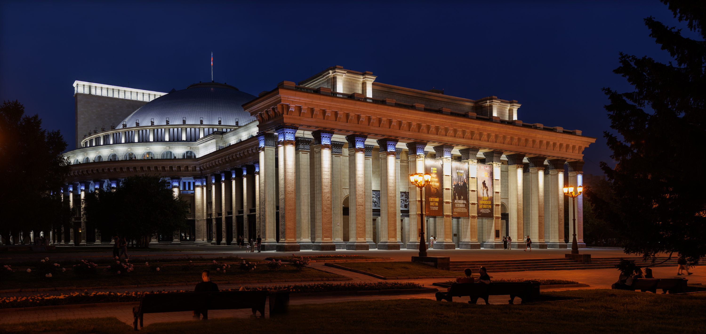
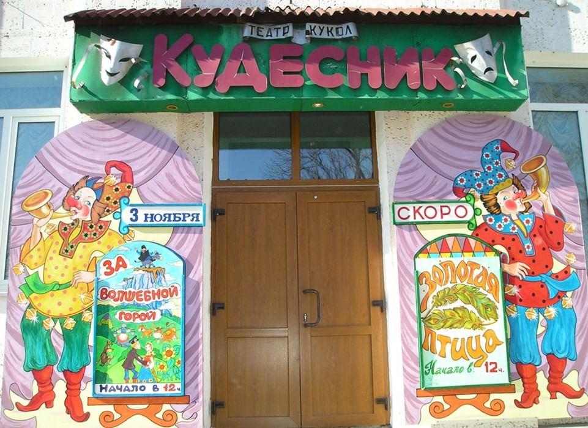

Народы Обь-Иртышского бассейна

Ханты и манси
Вместе эти два народа образуют группу обских угров. Они издревле почитают многих животных, таких как лоси и лягушки, а также поклонялись медведям, после охоты на которых праздновали с песнями и танцами несколько дней в качестве извинения за его убисйство.

Ненцы
Кочевники тундры, прославленные оленеводы и авторы лирических песен про то что на душе и эпических песен (сюдбабц) про великанов или тяжести жизни героев песен, передаваемые устно из поколения в поколения, сохранившие древнее горловое пение.

Сибирские татары
Потомки древней золото-ордынской цивилизации и сибирских племён, чьё музыкальное и поэтическое наследие вплелось в общую канву сибирской культуры. Например такой жанр рассказов как "дастаны", в которых центром конфликта является борьба за невесту.

Русские старожилы
Потомки русских переселенцев в Сибирь. Принесли на Обь и Иртыш свою песенную культуру, хороводные традиции и особый «сибирский говор», обогатив местный фольклор. Например вечёрочную культуру, что была основана на песенно-игровых традициях северных губерний России.
Литературное наследие
Корни местной литературы - в устном творчестве хантов и манси: героическом эпосе, мифах и обрядовых песнях. В XIX веке сибирские города стали местами ссылки и службы многих русских писателей. Именно в Омске отбывал каторгу Фёдор Достоевский - этот опыт лёг в основу «Записок из Мёртвого дома». А также из самого народа хантов вышел писатель Еремей Данилович Айпин, на произведения которого не мало повлиял фольклор его народа. Из народа Ненцев же был Антон Петрович Пырерка - Первый ненецкий учёный, писатель и переводчик, сыгравший ключевую роль в создании ненецкой письменности и развитии литературы на родном языке.

Музыкальные традиции
Горловое пение хантов и манси, ритмы шаманских бубнов, обрядовые мелодии — всё это бережно хранят современные ансамбли «Асъях» и «Кантелен».
В песенных и музыкальных традициях Ненецкой фольклорной группы «Вы’сей» неповторимо и самобытно выражена древнейшая культура рыболовов, охотников, собирателей, оленеводов.
Тобольск гордится Александром Алябьевым. Омская и Новосибирская филармонии — центры симфонической жизни Сибири.
Из Омска вышел Егор Летов («Гражданская оборона»), из Новосибирска — «Калинов мост» Дмитрия Ревякина.

Театральное искусство

Омский театр драмы
Старейший крупнейший и старейший академический драматический театр Сибири, основан в 1874 году на средства, собранные по подписке жителями Омска. С театром связаны имена многих мастеров театрального и киноискусства.

Тобольский театр им. Ершова
Старейший театр Сибири, основанный в 1705 году. Театр был основан митрополитом Филофеем (Лещинским). Первоначально он ставил исключительно духовные представления. С 1744 года в репертуаре появились светские пьесы

НОВАТ (Новосибирск)
Театр открылся 12 мая 1945 года оперой М. И. Глинки «Иван Сусанин». Один из крупнейших театров оперы и балета в России, символ Новосибирска и объект культурного наследия федерального значения.

Театр кукол «Кудесник»
Создан в 1990 году. Ставит кукольные пьесы для детей, в том числе по мотивам русских и даже еврейских сказок. Соединяет режиссуру с сюжетами обско-угорской мифологии
🎭 Крупнейший фестиваль — «Сибирский транзит» в Омске
Кинематограф
Первый художественный фильм. В 1924 году в Новосибирске сняли фильм «Красный газ», посвящённый событиям Гражданской войны.
Фильм «Три тополя на Плющихе» снимался не в Москве, а в Тюмени.
Тобольский кремль — главная кинодекорация Сибири. Здесь снимали «Тобол», «Государь».
Студия «Миг» создала фильмы «Медвежий угол», «Белый ягель» — призёры фестивалей.
Культура Обь-Иртышского бассейна
Литературное, музыкальное, театральное и кинематографическое наследие народов Сибири.
Источники: cписок источников